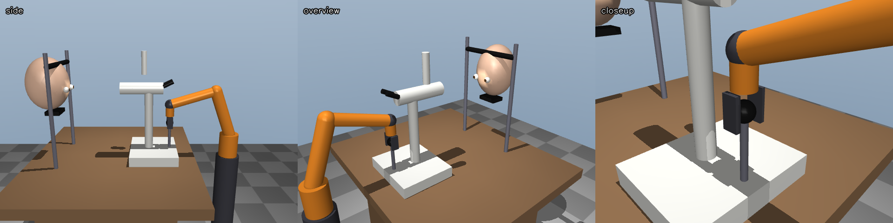
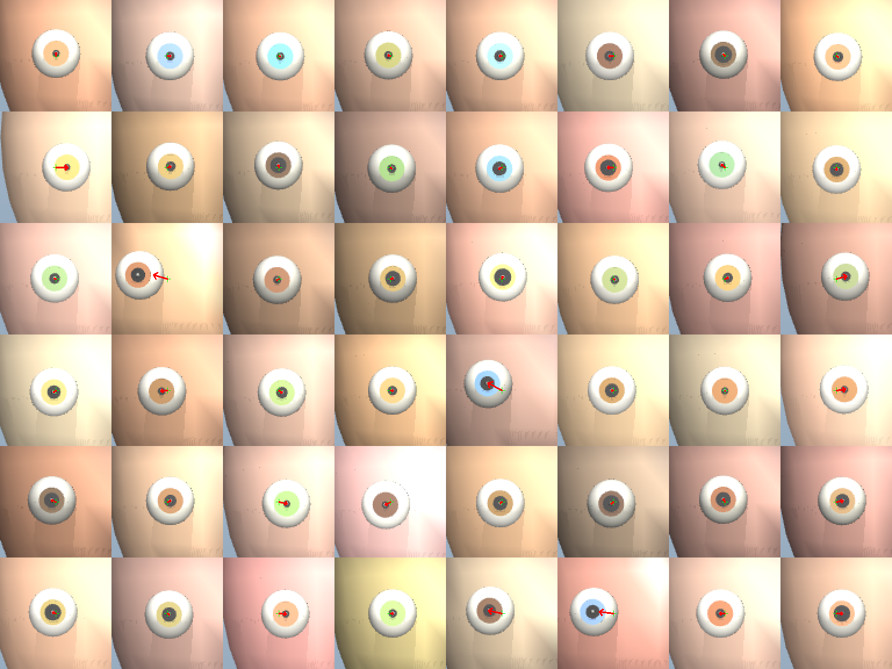
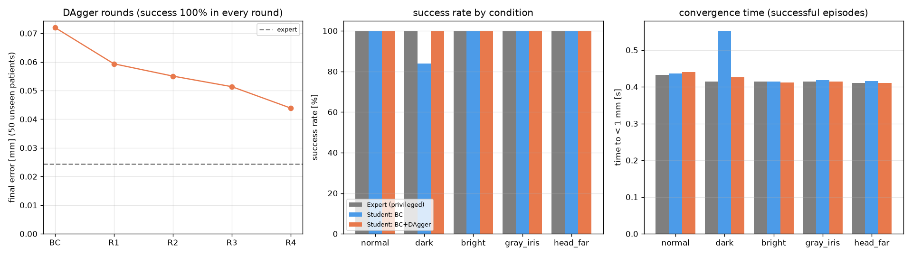
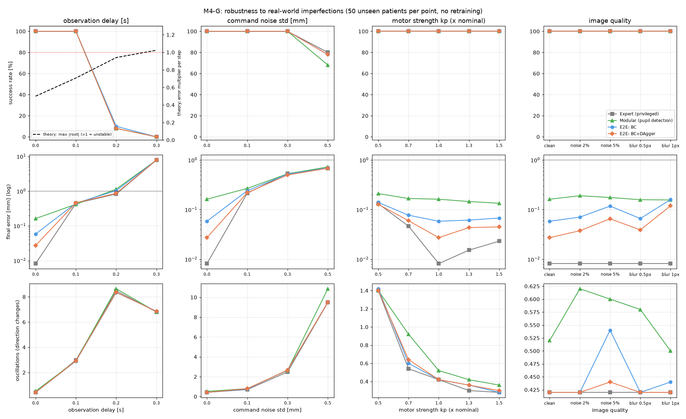
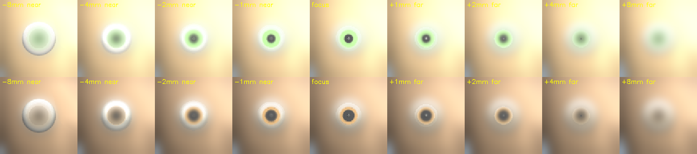

細隙灯顕微鏡の診察では、検者がジョイスティックで本体を動かし、患者の瞳孔に光軸とピントを合わせる（アライメント）。本課題では、遠隔診療を見据え、既存の細隙灯を改造せず、人の手のためのジョイスティックをロボットアームがそのまま握って操作するシステムを物理シミュレータ MuJoCo 上に構築した。シミュレータだけが知る瞳孔の真の位置を使う「先生」（P制御）のお手本から、カメラ画像だけを入力とする「生徒」（CNN）を行動クローニング（BC）と DAgger で学習した。未知の合成患者50人で、生徒は成功率100%、収束0.44秒、最終誤差0.027mmを達成した。さらに5つの拡張実験（左眼・モジュール型との比較、画像の遅れ、両眼の切替、瞬き、前後のピント合わせ）を行い、End-to-End 学習の近道学習、遅れによる振動（制御理論の予測と一致）、手順の外の状況での誤った自信などの弱点と、その対策を示した。特にピント合わせでは、眼科医が「手前に引いた状態から奥へ押す」手順を守ることが、画像だけでは決まらない前後の向きを補っていることが、実験から裏づけられた。
細隙灯顕微鏡は眼科診療の基本の検査機器であり、検者は片手でジョイスティックを倒して本体を左右・前後に動かし、回して高さを合わせる。遠隔地での眼科診療や、検者の負担軽減のために、この位置合わせの自動化には価値がある。自動化の方法として専用の電動ステージを組み込む方法も考えられるが、普及している既存の機器をそのまま使えない。そこで本課題では、人の手のための操作インタフェース（ジョイスティック）を、ロボットアームがそのまま握って操作する構成をとった。
AIの役割は、カメラ画像を見てジョイスティックをどう動かすかを決める方策（ポリシー）である。手で設計した制御則（古典制御）ではなく、お手本からの模倣学習で方策を得る。眼科医の手技を「お手本 → 模倣」で学ばせるという構図は、医療現場での技能継承とも重なる。
目標は次の3点とした。(1) ロボットアームがジョイスティックを握り、指令どおりに細隙灯を動かせること。(2) 画像だけを見る学習済み方策で、未知の患者の瞳孔に合わせられること。(3) 実用化を見据え、学習方策の弱点（条件の変化、遅れ、瞬き、ピント）を実験で明らかにすること。

MuJoCo の設計図（MJCF）で、診察台・細隙灯（基台・支柱・鏡筒）・ジョイスティック・顎台・合成CGの頭部と両眼を作った。眼は半径12mmの球に虹彩・瞳孔の円盤を持ち、瞳孔の中心に目印（site）を置いた。鏡筒の先に細隙灯カメラ（検者が接眼レンズで見る視野に相当、視野角15°、96×96画素）と、スポットライトによる細隙光を付けた。
実機ではジョイスティックの傾きがリンク機構で本体の移動に、ハンドルの回転がネジで鏡筒の上下に変換される。これを MuJoCo の等式拘束で「本体の左右位置＝0.15 m/rad × 左右の傾き」「前後位置＝−0.15 m/rad × 前後の傾き」「鏡筒の高さ＝0.00318 m/rad × ハンドルの回転」として再現した（10°倒すと26mm、半回転で10mm）。簡略化として、実機の「大きな移動は台ごと滑らせる」は省き、傾き角と位置を一対一に対応させた。
6関節のアーム（旋回・肩・肘と球面手首3軸）を検者側に置いた。方策の出力は「本体を Δx, Δz（拡張Hでは Δy も）[mm] 動かす」という差分の指令で、これを ①ジョイスティックの目標角 → ②ノブの目標の位置・姿勢 → ③減衰付き最小二乗法による逆運動学（Δq = Jᵀ(JJᵀ+λ²I)⁻¹e）→ ④関節の位置制御、の順に変換する。把持は手とノブを溶接拘束（weld）で一体化した（「握った状態から開始」という簡略化）。モーターのゲインを調整し（kp/kv = 250/6）、指令への追従誤差は平均0.19mm・最大0.47mmとなった。
0.1秒ごと（10Hz）に「画像を見る → 指令を決める → 動かす」をくり返す。指令は1ステップ最大3mm。細隙灯は瞳孔から左右±15mm・上下±8mmずれた位置（平均9.6mm）から始め、光軸と瞳孔中心のずれが1mm未満を5ステップ（0.5秒）保てたら成功、5秒以内に成功しなければ失敗とする。評価は学習に使っていない合成患者50人（全方式で同じ50人）で行った。
先生は、シミュレータだけが知る瞳孔中心の真の位置（特権情報）を使い、指令 = 0.5 × ずれ（P制御）で操作する。画像を見ないので実機では使えないが、必ず正確に合わせられる（成功率100%、収束0.43秒）。お手本は、合成患者3,000人について1.2秒（12ステップ）ずつ、画像と先生の指令の組を記録した（3.6万組、16並列で約5分）。患者ごとに頭の位置（左右±10mm・上下±8mm）、瞳孔の半径（1.5〜4.0mm）、虹彩の色（5色）、肌の色、照明の明るさ（×0.7〜1.3）を変えた（ドメインランダム化）。また、実行する指令にだけ標準偏差0.5mmのノイズを混ぜ、ずれた状態から戻る場面も集めた（DART [2]、記録するのはノイズなしの正解）。

生徒は96×96の画像だけを入力し、指令を直接出力する CNN である。畳み込み3層の後に空間ソフトマックス [3] で16個の特徴点の座標を取り出し、全結合層で指令を出す（約3万パラメータ、CPUで学習可能）。細隙灯カメラでは1mm ≒ 1.85画素で、合格範囲が約2画素しかないため、画素より細かい位置を読める空間ソフトマックスを採用した。
| 方式 | 通常 | 暗い（×0.5） | 明るい（×1.55） | 灰色の虹彩 | 頭が大きくずれる |
|---|---|---|---|---|---|
| 先生（特権情報） | 100% / 0.008 | 100% / 0.010 | 100% / 0.010 | 100% / 0.010 | 100% / 0.010 |
| 生徒 BC | 100% / 0.058 | 84% / 0.80 | 100% / 0.14 | 100% / 0.16 | 100% / 0.063 |
| 生徒 BC＋DAgger | 100% / 0.027 | 100% / 0.32 | 100% / 0.076 | 100% / 0.044 | 100% / 0.030 |
「暗い」「明るい」「灰色の虹彩」「頭が大きくずれる」は学習時の範囲の外の条件。

右眼だけで学習した生徒は、左眼を見せても左眼を無視して右眼まで約64mm移動した（成功率0%）。生徒は「写った瞳孔を中央に合わせる」ではなく、顔の輪郭などを手がかりに「患者の右眼へ行く」を学んでいた。これは近道学習 [5] の典型例である。対策として、(a) 右眼の画像を左右反転して学ぶデータ拡張は48%にとどまった（光源が片側に固定で、反転画像の光の向きが本物の左眼と逆になるため）。(b) 左眼のお手本も集めて学ぶと、両眼とも100%になった。シミュレータでは先生が新しい課題のお手本を自動で作れるので、これが最も確実で安価だった（収集7分＋学習46分）。なお、左眼の評価の途中で、アームの手首が可動範囲の端に当たる不具合を見つけて修正した。
比較として、学習を使わず、画像処理で瞳孔を検出して P制御で動かすモジュール型を作った（しきい値を暗い側から上げながら同じ領域を追跡し、虹彩の影とつながる直前で止める方法。お手本画像4,000枚で検出失敗0%）。
| 方式 | 通常 | 暗い | 左眼（学習なし） | 失敗の仕方 |
|---|---|---|---|---|
| モジュール型（校正あり） | 100% / 0.16 | 86% / 1.72 | 100% / 0.16 | 瞳孔が見つからず止まる（暴走しない、理由が見える） |
| 生徒 BC＋DAgger（右眼） | 100% / 0.027 | 100% / 0.32 | 0% / 57 | 自信を持って誤った場所（右眼）へ動く |
End-to-End は精度が高い（特権情報のラベルで、照明による見かけのずれまで補正できる）一方、何を手がかりにしているかが見えず、学習の範囲外では自信を持って誤る。モジュール型は精度で劣るが、見ているもの（瞳孔の円）が明確で、範囲外でもそのまま使え、失敗は「見つからない」と分かる。医療機器としては、両者を組み合わせ、生徒の指令が検出した瞳孔と大きく食い違えば止める、といった安全装置が考えられる。
実機で避けられない不完全さを、学習し直さずに試した。モーターの強さ（×0.5〜1.5）や画像のノイズ・ぼけでは全方式が100%を保った（毎回画像を見て直す閉ループ制御の強み）。一方、観測の遅れでは全方式がそろって崩れた（0.1秒：100%、0.2秒：8〜10%、0.3秒：0%）。P制御のずれは
に従い、特性方程式 zk+1 − zk + g = 0 の根の大きさの最大値は g = 0.5 で 0.2秒 → 0.94、0.3秒 → 1.02（発散）となり、実験と一致した（0.2秒はアーム自体の約0.1秒の反応の遅れが加わったと考えられる）。理論から「最も速く収まるゲイン」（0.2秒 → 0.15、0.3秒 → 0.11）を求め、方策の出力に倍率（0.3、0.22）を掛けると、学習し直さずに全方式が100%に戻った（収束は1.1〜1.5秒に延びる）。実機では、カメラ〜推論〜通信の遅れを0.1秒以内に抑えるか、測った遅れに合わせてゲインを下げる必要がある。

両眼の間（約64mm）は細隙灯カメラの視野（横約52mm）より広く、片眼に合わせた状態では反対の眼が画面に写らない。そこで画像に加えて「右眼へ／左眼へ」の指示を入力する生徒（goal-conditioned policy）を作り、両眼の間の距離を56〜72mmでばらつかせたお手本（計13.2万組）で学習した。
| 方式 | 右眼→左眼 | 左眼→右眼 | 到達時間 | 最終誤差 |
|---|---|---|---|---|
| 先生 | 100% | 100% | 2.24〜2.26秒 | 0.006mm |
| 決め打ち64mm移動＋モジュール型（学習なし） | 100% | 100% | 2.41〜2.45秒 | 0.15mm |
| 指示の無い生徒 | 0% | 0% | — | 64mm |
| 指示つきの生徒 | 100% | 100% | 2.25〜2.27秒 | 0.05〜0.06mm |
指示を1つ加えるだけで、画像だけでは決まらない課題が解け、移る速さは先生と同じだった。その場で合わせる精度も落ちなかった（0.05〜0.07mm）。
右眼に上瞼・下瞼を作り、患者が瞬きをするようにした。先生は「瞳孔が隠れている間は待つ」とした。
| 方式 | 瞬き中の動き | 瞼あり・瞬きなしの最終誤差 |
|---|---|---|
| モジュール型（見つからなければ動かない） | 0.06 / 0.30mm | 0.30mm |
| BC＋DAgger（瞬き・瞼を知らない） | 0.54 / 0.87mm | 0.24mm（瞼なしでは0.027） |
| 瞬きのお手本で学んだ生徒（1枚） | 0.08 / 0.29mm | 0.058mm |
| 同（直前2枚も見る＝フレームスタック） | 0.05 / 0.13mm | 0.045mm |
瞬きを知らない生徒は、瞳孔の見えない画像（学習の範囲外）で何らかの指令を出し、瞼が閉じている間に動いた（BC では最大1.8mm）。瞬きのお手本で学ぶと「待つ」を真似でき、直前の画像も見る生徒は、半分閉じた途中の画像で迷う最悪の場合を小さくした。また、瞬きをしなくても、瞼があるだけで瞼を知らない生徒の精度が落ち（0.027 → 0.24mm）、逆に瞼ありで学んだ生徒は瞼が無いと精度が落ちた。End-to-End の生徒は眼のまわりの見た目全体を手がかりにしており（5.1節と同じ性質）、実機では瞼の形・睫毛などのばらつきを学習データに含める必要がある。
深度画像から画素ごとの焦点からのずれを求め、ずれに比例したぼかし（1画素/mm）を加えて焦点ぼけを再現し、指令に前後（Δy、ジョイスティックの前後の傾き）を加えた。成功条件に「前後0.5mm未満」を追加した。眼科医（筆者）の臨床経験では、手前に引いた状態から奥へ押してピントを合わせることが多い。そこで先生のお手本は、焦点より3〜8mm手前から始めた（3,000人×1秒）。

| 方式 | 手前から開始（臨床の手順） | 近づきすぎから開始（学習にない） |
|---|---|---|
| 先生 | 100%（0.47秒） | 100% |
| 生徒（1枚） | 78%（0.51秒） | 0%（最初に焦点から遠ざかった割合 100%） |
| 生徒（直前2枚も見る） | 86%（0.53秒） | 16%（同 88%） |
手前から始めると、生徒は左右・上下を毎回合わせ、失敗はすべて焦点の0.5〜1.2mm手前で止まったものだった（焦点付近ではぼけの差がごくわずかで、「ほぼ合っている」と「合っている」を画像から見分けにくい）。一方、近づきすぎた位置から始めると、生徒はさらに奥へ押し込み、26〜34mm奥の可動範囲の端まで行った。ぼけは前後で対称なので、1枚の画像からは「手前すぎ」と「奥すぎ」を区別できず、お手本の「ぼやけていたら奥へ押す」をそのまま実行したためである。直前の画像も見る生徒は、ぼけが増えていくことに気づいて引き返せた例がわずかにあった。